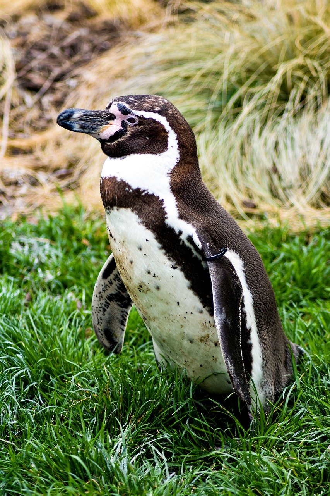
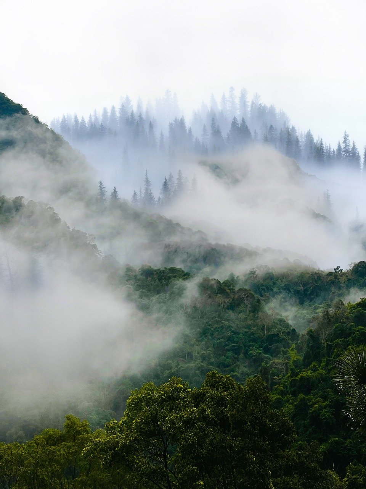
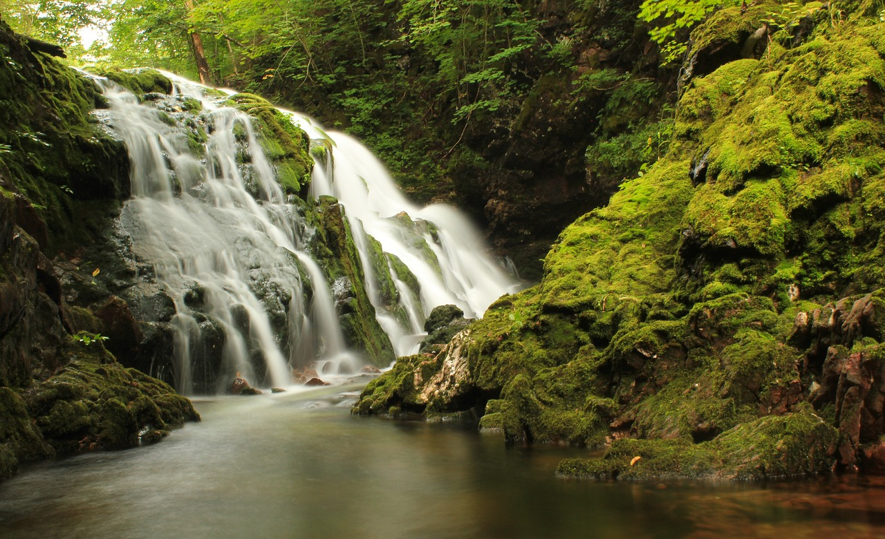

우리가 지켜야 할 아름다운 자연
지구는 약 46억 년의 세월 동안 다양한 생태계와 생명체들을 품어왔습니다.
숲의 나무 한 그루, 산속의 작은 생명, 맑은 하늘과 깨끗한 강은 단순한 자연의 일부가 아니라 우리 삶의 기반입니다.

자연은 우리가 숨 쉬고, 먹고, 살아가는 모든 것을 제공하는 근원이자 친구입니다.
하지만 그 소중함을 잊고 파괴해온 시간도 길었습니다. 이제는 다시 자연과 함께 살아가기 위한 노력이 필요합니다.

자연은 인간뿐 아니라 모든 생명체에게 공통된 터전입니다. 우리가 보호해야 할 이유는 단지 환경보호를 넘어서,
다음 세대에게 물려줘야 할 책임이 있기 때문입니다.
지속 가능한 미래를 위해, 지금 우리가 자연을 사랑하고 돌보는 일이 그 어느 때보다 중요합니다.
우리가 품은 자연, 자연이 품은 우리
자연은 단순한 배경이 아닙니다. 바람결 따라 흔들리는 나뭇잎, 조용히 흐르는 강물, 계절마다 모습을 바꾸는 들꽃 하나하나는
우리의 삶과 깊이 연결되어 있습니다. 우리는 자연 속에서 숨 쉬고, 자연이 준 선물로 살아갑니다.
숲은 수천 년 동안 그 자리를 지켜오며, 다양한 생명체의 집이 되어왔습니다.
나무는 공기를 정화하고, 토양을 보호하며, 수많은 생물들이 공존하는 생태계를 만들어냅니다.
그리고 이 모든 생태계는 보이지 않는 연결고리로 우리와 이어져 있죠.

하늘은 우리에게 빛과 구름, 그리고 비를 선물하고, 바다는 수많은 생명과 수분 순환의 근원이 됩니다.
이처럼 자연은 거대한 조화의 무대이며, 우리는 그 안에서 살아가는 한 존재일 뿐입니다.
하지만 개발과 오염, 무분별한 자원 소비는 자연의 균형을 무너뜨리고 있습니다.

이제는 자연과 다시 손을 맞잡아야 할 때입니다. 자연을 지킨다는 것은 곧 우리 삶의 터전을 지키는 것이고,
더 나아가 미래 세대가 살아갈 건강한 지구를 준비하는 일입니다.
우리가 자연을 얼마나 사랑하고 존중하느냐에 따라 지구의 내일이 달라집니다.
자연은 우리에게 아무 조건 없이 쉼을 주고, 위로를 주는 존재입니다.
그 아름다움과 고마움을 다시 돌아보며, 오늘부터라도 우리의 일상에서 작은 실천을 시작해보는 건 어떨까요?